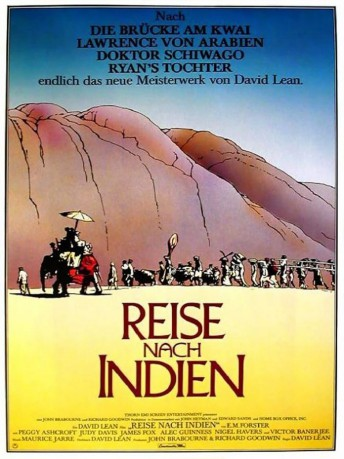
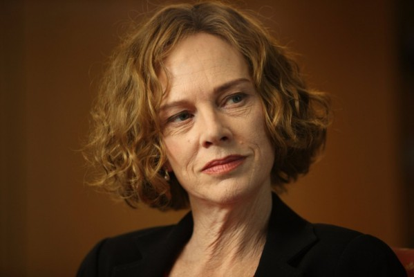
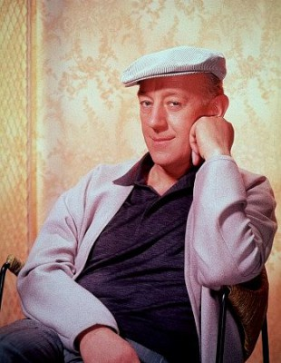
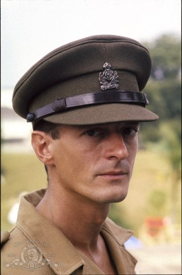
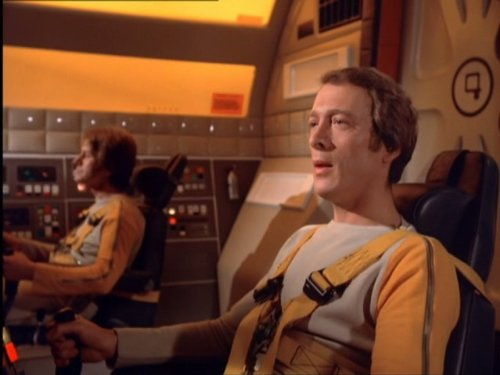
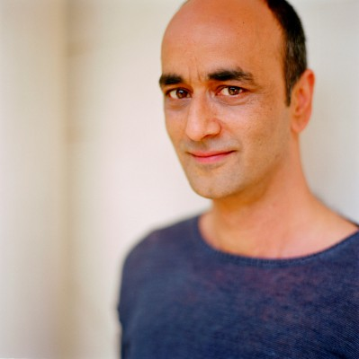
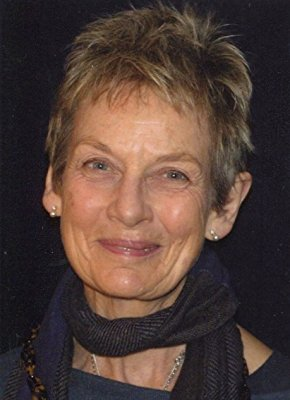
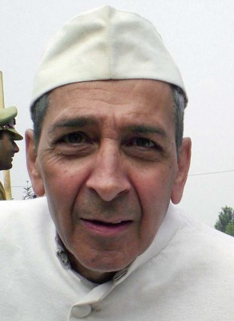

#10190 Reise nach Indien
Alternativ: A Passage to India (Englischer Titel)
Auszeichnungen: 2 Oscars gewonnen für 9 Oscars nominiert 3 GoldenGlobes gewonnen 1 BAFTA-Awards gewonnen
 
 IMDB-Wertung: 7.4 / 10
IMDB-Wertung: 7.4 / 10  Metascore: 0
Metascore: 0 
Adela Quested eine gut situierte junge Engländerin reist Anfang der 1920er Jahre in die Kronkolonie Indien. Dort will sie ihren Verlobten Ronny Heaslop, der als Friedensrichter arbeitet, heiraten. Begleitet wird Adela von ihrer künftigen Schwiegermutter Mrs. Moore. Die beiden Damen müssen bald erkennen, dass die Verhältnisse in der Kolonie nicht sso sind, wie sie es aus den exotischen Reiseberichten kennen. Adela ist abgstoßen von der Arroganz der Engländer, die die Einheimischen wie Menschen zweiter Klasse behandeln. Stattdessen entflammt ihre Begeisterung für die Kultur des Landes. Der Lehrer Richard Fielding arrangiert für Adela und Mrs. Moore eine Begegnung mit dem Brahmanen Naraya und dem indischen Chirurgen Dr. Aziz Doch der Besuch in der sagenumwobenen Marabar-Höhle endet ihm Eklat, als Adela von den Engländern blutig und verwirrt aufgefunden wird. Dr. Aziz wird der Vergewaltigung bezichtigt...
Jahr: 1984
Dauer: 155 Minuten
FSK: 6
Land: England Studio: Kinowelt Home EntertainmentTonspuren:
Untertitel:
Auflösung: 1080p (1920x1080) Größe: 9830 MB
Genre: Drama, Abenteuer, Geschichte
Regisseur: David Lean
Drehbuch: E.M. Forster, E.M. Forster, Santha Rama Rau, David Lean
Soundtrack: Maurice Jarre
Darsteller:
-  Judy Davis als Adela
- Victor Banerjee als Aziz
- Peggy Ashcroft als Mrs. Moore
- James Fox als Fielding
-  Alec Guinness als Godbole
-  Nigel Havers als Ronny
- Richard Wilson als Turton
-  Michael Culver als McBryde
-  Art Malik als Ali
- Saeed Jaffrey als Hamidullah
- Clive Swift als Major Callendar
-  Ann Firbank als Mrs. Callendar
-  Roshan Seth als Amritrao
- Sandra Hotz als Stella
- Dina Pathak als Begum Hamidullah
- John Michie als Bit Part (uncredited)
- Antonia Pemberton als Mrs. Turton
- Rashid Karapiet als Das
- H.S. Krishnamurthy als Hassan
- Ishaq Bux als Selim
- Moti Makan als Guide
- Mohammed Ashiq als Haq
- Phyllis Bose als Mrs. Leslie
- Sally Kinghorn als Ingenue
- Paul Anil als Clerk of the Court
- Z.H. Khan als Dr. Panna Lal
- Ashok Mandanna als Anthony
- Adam Blackwood als Mr. Hadley
- Mellan Mitchell als Indian Businessman
- Peter Hughes als P & O manager
- Duncan Preston als Club Member (uncredited)
- Richard Winter-Stanbridge als Train Passenger (uncredited)
Datei: X:\1984\Reise nach Indien (1984, FSK6, 1920x1080).mkv seit 18.12.2018
Festplatte: HD 1980-1986
 Es gibt insgesamt 46 Filme in der Gruppe '1984'
Es gibt insgesamt 46 Filme in der Gruppe '1984'